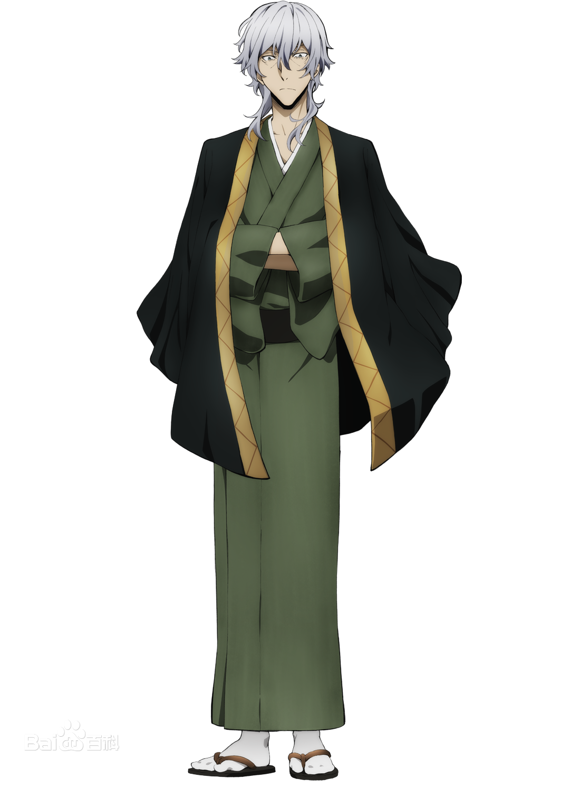
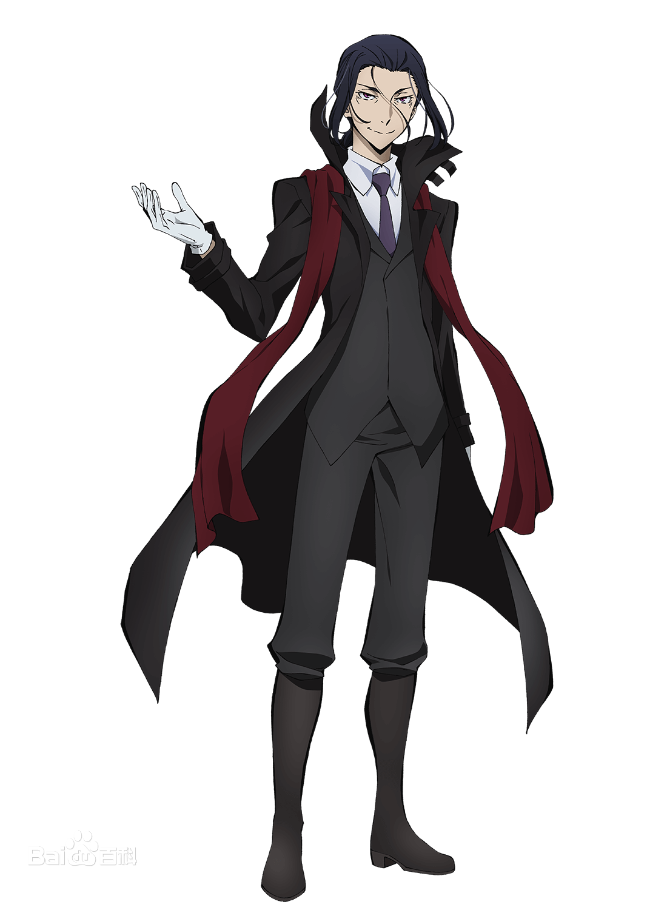
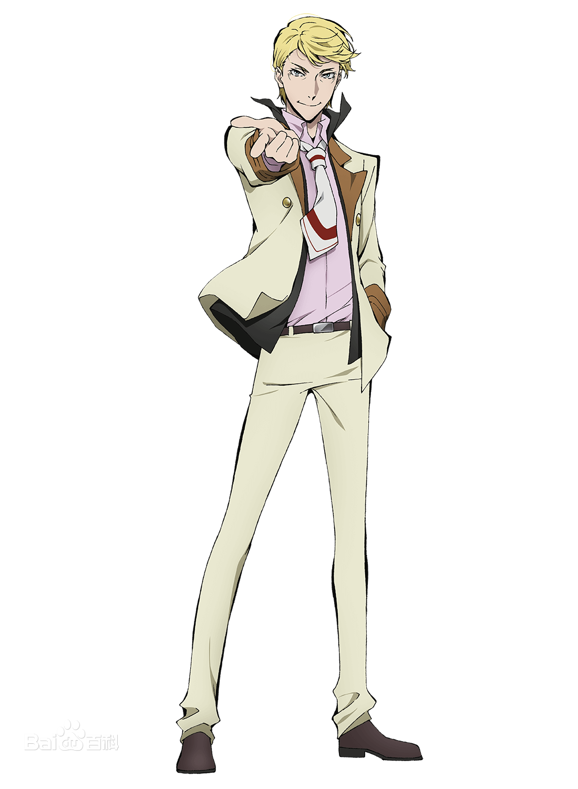

武装侦探社
简称“侦探社”，即专门从事不能交给军队和警察这类危险工作而成立的侦探集团。被称为生存于白昼世界与黑夜世界的夹缝之中“黄昏的武装集团”。其社员大部分是异能力的持有者。已知有社长福泽谕吉，社员江户川乱步、国木田独步、太宰治、与谢野晶子、中岛敦、泉镜花、宫泽贤治、谷崎兄妹。武装侦探社最初成立之时，夏目漱石曾为武装侦探社获得异能开业许可证做出了巨大贡献。事务所位于一栋老旧办公楼的四层，同建筑中一层为漩涡咖啡厅，二层为律师事务所，三层为空层，五层用来储藏杂物，隔壁有一家下村陶器店。

港口黑手党
以港口作为势力范围的凶恶犯罪组织，是比这座城市里的黑社会的暗部更加阴暗的危险团体，是这座城市的阴暗面本身，扎根于这座城市的政治经济等各个领域，他们被称为“港口黑手党”。已知港口黑手党最高决策机构为“五大干部会议”，会议是数年召开一次，唯独在决定组织动向时才会召开，负责决定组织内部的重大事项，极具强制力的意向明确会议。港口黑手党中有一支即使在武斗派中也称得上凶暴的行动部队“黑蜥蜴”，拥有匹敌特种部队的战斗力，极其残忍。另有一支直属黑手党首领的游击部队，由芥川龙之介领导。此外，在尾崎红叶手下还有一支专业的拷问小队。

组合（Guild）
弗朗西斯·F,北美的异能力者集团“组合（Guild）”的团长。同时也是拥有着多家企业的富豪。是个充满精英意识的自信者，会将想要的东西全部得到手。给敦设下莫大悬赏金的黑幕。以武装侦探社的“异能开业许可证”为目标。